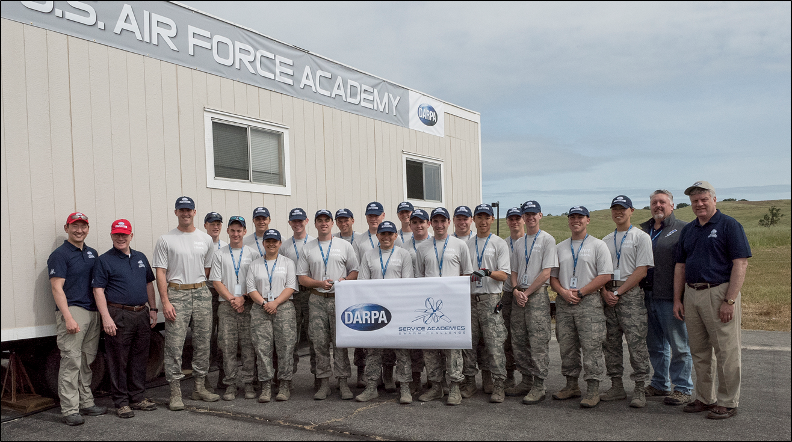

The Swarmin' Story
The average F-22 Raptor costs $150M, the F-35 Lightning II $100M, and the Ford Class Supercarrier $13B. All far too high a price to pay if lost under any circumstance. The US Armed Forces needed a cheaper, more sustainable way to support ground troops and project power. DARPA took inspiration from the honey bee: cheap, expendable drones that behave as a single collective to swarm and overwhelm any objective.
There's plenty of research behind making swarms of drones fundamentally usable and demo-able, but we've yet to experiment on how to tactically use and apply them to scenarios. And thus, DARPA organized the Service Academies Swarm Challenge, with us as the US Air Force Academy team.
The DARPA Swarm Drone Challenge included:
A combination of fixed-wing and rotary wing drones
Each Service Academy team developing their own swarm tactics and techniques and building it in code
A capstone live-fly event featuring air-to-air battles between each teams' swarms


My partner, 1st Lt Kyle Hubert, and I were studying for our Computer and Network Security degrees at the time, and we took issue with the competition moderators' decision to waive security requirements and ban use of cyber techniques in the event. So as we helped develop the team develop our strategy and code the drone behaviors, we also penetration tested and reverse engineered the drones and experimented with various exploits against them, from Man-in-the-Middle (MITM) attacks to social engineering against our opposing teams.
During the live-fly exercise at Camp Roberts, CA, we sneakily set up one of our antennas and launched our attacks against our opposing teams. Within seconds, several opposing drones suddenly started landing right where they were hovering as our drones pressed the attack. The opposing team, unaware of what was truly happening, went into a panic and lost their team cohesion.
We demonstrated that even with the latest and greatest technology in hand, we could still lose a fight if we deprioritize security. In a contested environment, an opposing force would do anything to gain an advantage or nullify ours, and so we shouldn't limit the actions of red teams so that we can learn the most valuable lessons and be best prepared for the real world. As a result, DARPA allowed cybersecurity actions and hardening on its drones in the 2nd year of the Swarm Challenge. We did get some real stern admonishments from our leadership, though. But we still graduated, and we got some good laughs. Worth it.
If you're interested, you can read more about the competition here.
About the Defense Advanced Research Projects Agency
DARPA is a Department of Defense (DoD) agency dedicated to creating breakthrough technologies and capabilities for national security.
Where other organizations focus on incremental advances, DARPA explicitly strives for transformational change by making pivotal investments in emerging, leading-edge technologies.
DARPA also plays an invaluable role in solving problems that serve more than the Department of Defense directly, from securing the US semiconductor supply chain to covid-19 detection.